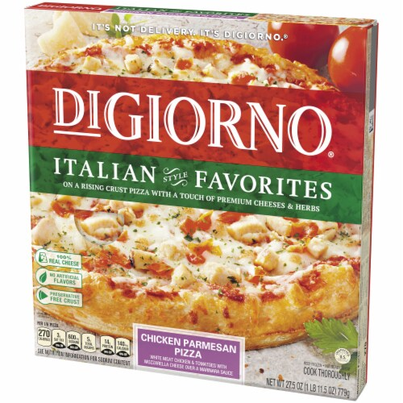

How to make Chicken Parmesan Pizza:
Ingredients:
- 12 frozen chicken nugget
- 1 12-inch pre-bake pizza crust
- 1/2 cup marinara sauce
- 2 buttons mushroom, sliced
- 1/2 cup shredded mozzarella cheese
- 1/4 cup shredded Parmesan cheese
- 6 basil leaves, cut into thin ribbons
Directions:
- Preheat the oven to 425 degrees F (220 degrees C). Arrange nuggets in a single layer on a pizza pan.
- Bake nuggets in the pre-heated oven for 10 minutes or according to package directions; transfer to a cutting board and cut each nugget in half.
- Increase the oven temperature to 450 degrees F (230 degrees C).
- Bake pizza in the preheated oven until heated through, about 5 minutes. Sprinkle with Parmesan cheese and scatter basil over cheese; bake for 3 minutes more.

Return to top.
Return to main page